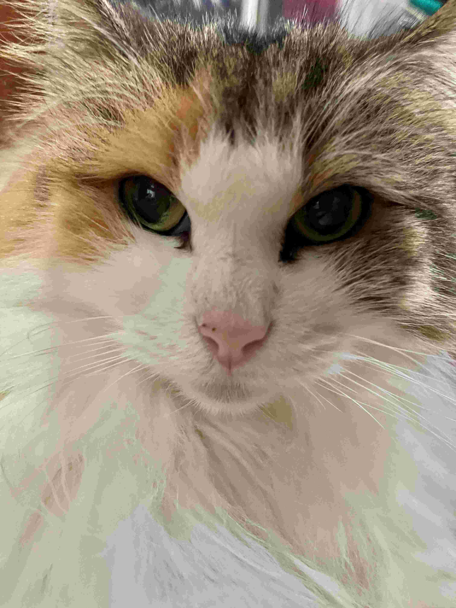
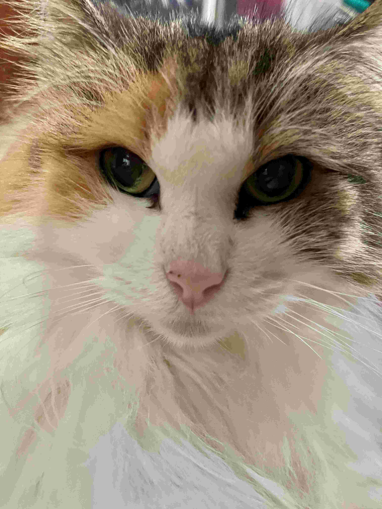
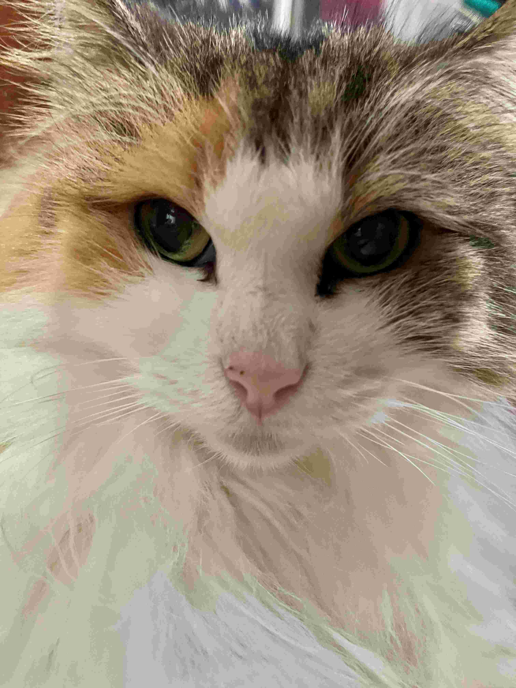

自己紹介
大阪公立大学高専に通っている三年生です．
数学が好きです．今は，代数学Ⅲ (桂) を読んでいます．
競プロも好きです．
 

こんにちは
大阪公立大学高専に通っている三年生です．
数学が好きです．今は，代数学Ⅲ (桂) を読んでいます．
競プロも好きです．


「参加部門:モバイル」
「✊☺☝️†最強†☝️☺✊」
「目標: 全国大会金賞」
Pythonの練習でオセロを作りました:リポジトリ
2023年の高専祭にて, 6人でチームを組み広告でよく見るゲーム(通称:数字タワー)を作成しました.リポジトリ
デザイン以外ほとんどやりました.

任天堂の世界のアソビ大全51というゲームの実況動画を見て，実際に遊んでみたいなと思い, 特に気になったものをピックアップして, 実装しました.
実際は, ピックアップしたものの半分は実装できておらず, 特にGUIのことを考えると嫌な気分になり, 中身の部分も手を付けていないです. そもそもルールが複雑なものも多い.
(2024/2/25追記) PySideを用いて, 一つのファイルを実行するだけで, すべてのゲームを選択できるようにしました.これにより, 画面の大きさやボードのサイズなどの設定を簡単に変更できるようになりました.
それぞれのゲームでは, 設定を変えることができる部分やその自由度が異なるので, ゲームごとに設定ウィンドウを作成しましたが, 設定ウィンドウのベースとなる部分をしっかり作りこみ, プログラムを構造化しました. そのため, 各設定ウィンドウは必要最低限の引数だけで構成できるようになっています. (制作時間8時間)


ウェブページのリンクはこちら．
Reactを用いたTodoアプリを作成しました．
以下はリポジトリのREADME.mdからの引用
Next.jsを用いた個人ブログ専用のアプリを作成しました．情報科学分野の解説記事を中心とした，カスタマイズ可能な個人ブログプラットフォームです．
リポジトリはこちら，実際に動いているアプリはこちらからご覧いただけます．
開発期間: 2024.12 ~ 2025.2 (約40時間)